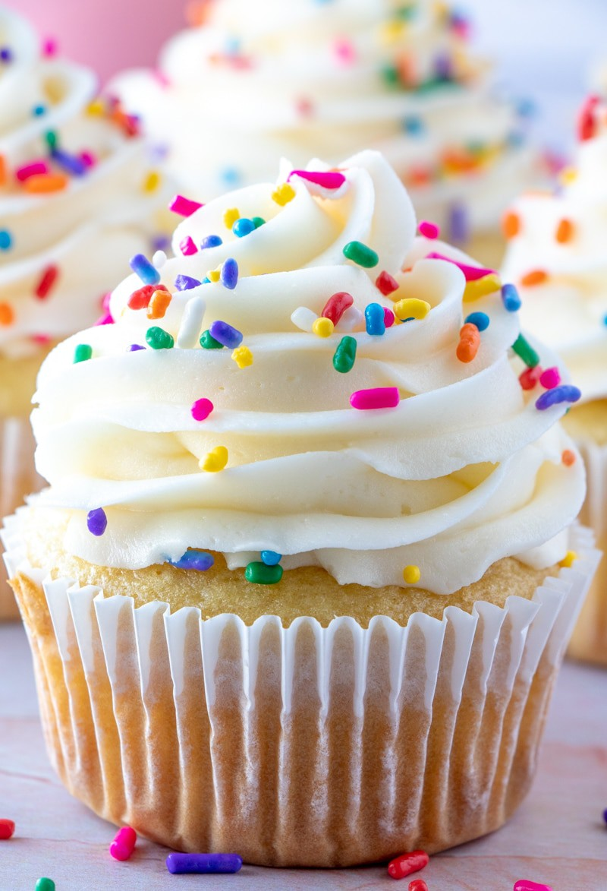

Chocolate Chip Cupcakes
Introduction
This recipe is excellent for anyone who has a craving for a sweet snack. This standard 2 egg cupcake recipe is something my family has been making for years and is always delicious. I believe it is a step up from regular cupcakes because of the chocolate chips. It is not long to make and an easy-to-follow recipe.

Ingredients
- 2 cups Five Roses Enriched Flour
- 1 cup sifted sugar
- 3 ½ tsp baking powder
- 2 eggs
- ½ tsp salt
- Drop of vanilla extract
- ½ cup butter or shortening
- 1 cup milk
- Chocolate chips
Instructions
- Preheat oven to 350°F. Line cupcake tins with cupcake liners.
- Sift and measure flour. Add baking powder and salt. Sift together.
- Mix butter until smooth. Add the sugar gradually, while beating between additions. Each portion of sugar must be dissolved in the butter before adding the next.
- Add eggs to mixture. Beat until mass is light and fluffy.
- Add dry ingredients alternately with liquid, beginning and ending with flour. Each portion of flour must be beaten into mixture before adding more liquid. When flour has been added, beat the mixture only enough to make smooth. Add vanilla extract.
- Pour at once into prepared pans. With mixing spoon, evenly distribute batter between cupcake tins.
- Bake on centre rack of oven, at temperature between 350°F and 375°F. Let bake for 25 minutes.
- When finished baking take out of oven. Let cool on cooling rack. Decorate how you want!